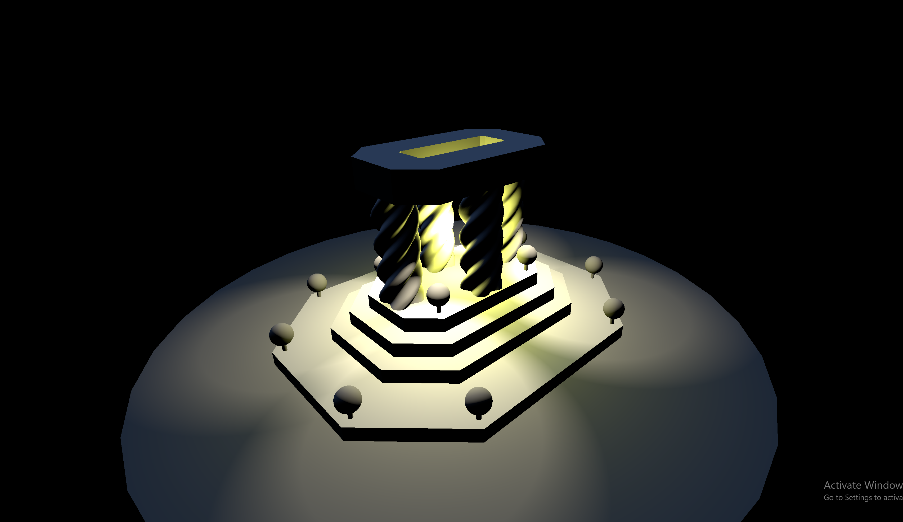
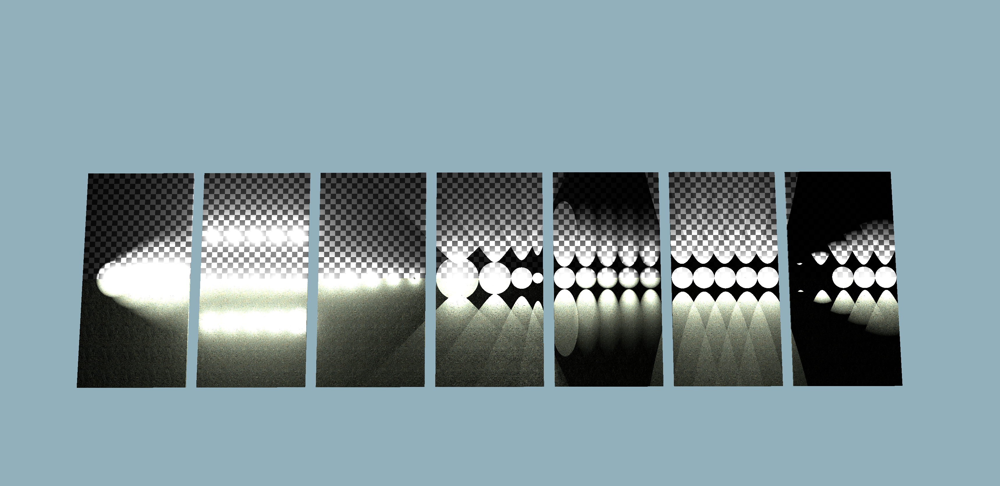
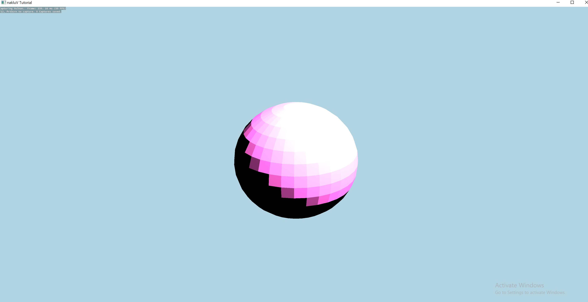
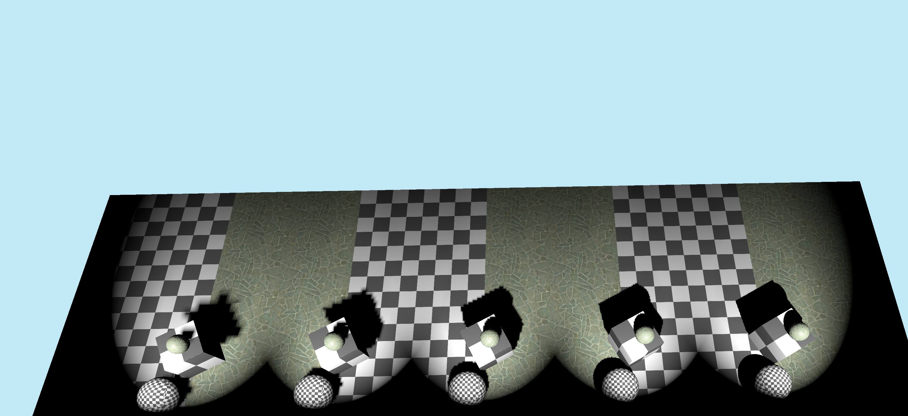
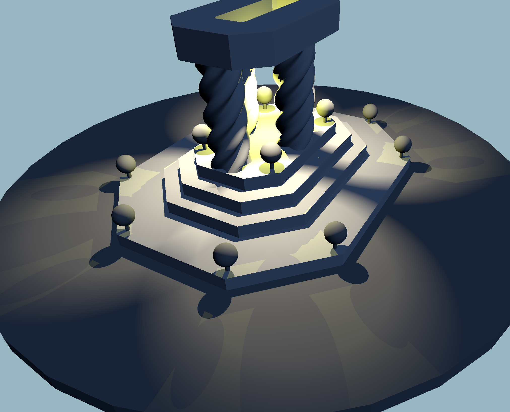

I spent some time trying to understand the math behind the representation point approximation in lighting, then went ahead implementing it for both diffuse and specular lighting. For shadow mapping, I did some research because I wanted to not use one descriptor per shadow map, so I ended up using a shadow atlas. I also implemented sphere lights shooting out 6 shadow maps, and a sorting algorithm to pack shadow maps into one big square texture, based on: https://lisyarus.github.io/blog/posts/texture-packing.html , assuming shadow maps have side lengths that are powers of 2. I wanted to also implement cascading shadow maps for the sun but had no time.
Describe the scene you lit, the light count and placement approach, and include a screen recording showing it running in real-time:
Wood normal map and Tile textures that gets mapped onto the wall and real vase respectively, they come from the example scenes.
--scene scene.s72 -- required -- load scene from scene.s72--nocull -- optional -- disable culling--camera CAMERA_NAME -- optional -- select camera named CAMERA_NAME--drawing-size width height -- optional -- specify window size --headless -- optional -- run in headless mode --exposure e -- optional -- change exposure of tone mapping, default is 0 --tone-map type -- optional -- change curve of tone mapping, default is linear I decided to leave them separate because I thought it's not that big of a difference in terms of memory. I used an int to represent the type of light it is.
Since I didn't want spot lights and sphere lights or sun lights to be stored in different classes, so I just have every light store 6 CLIP_FROM_WORLD matrices and 6 shadow_atlas transform coordinates to transform uvs to shadow atlas coordinates. Sphere lights need 6 shadow maps, sun light 4 and spotlight one, so in the shader, there will be maybe a better memory access, since all the lights are stored in one storage buffer?


I just did two scenes with pink default pbr and lambertian materials. Data is collected using RenderDoc. The relationship is a rather linear increase at large numbers. My viewer could handle around 200 lights at barely 16ms.

I render shadowmaps before the actual render pass; There's a depth bias set before each draw pass, I could change the depth bias based on the resolution of the shadow map; The material doesn't sample cube shadow maps using a normalized direction vector, but instead, a face number is computed in shader using the normalized direction vector, then the uv coordinates are computed using the corresponding face's CLIP_FROM_WORLD matrix, and the offset in the shadow atlas coordinates are calculated using the face's atlas offsets and the computed uvs. I'm taking 4 samples, weighted linearly using vulkan's sampler's linear interpolation option.

I rendered the lights-mix scene in 4k with 4096 by 4096 shadow maps for each of the cube face for the sphere light and for each of the spot lights. My pipeline is configured that when I turn shadows off, the previously render shadow map persists and still continues getting sampled, even without the shadow pass updating the shadow maps. The video shows that, when shadow maps are being rendered, the frame time goes up to 20ms, and when it's off it's 16ms again.
Cover, at least: your chosen method for sorting lights to meshes.
Build a scene in which your light sorting technique provides a performance improvement over rendering all meshes with all lights. Include a screen shot (and the scene itself).
Include data demonstrating the performance improvement in rendering this scene. E.g., a graph of the frame times for an animated fly-through of the scene with and without your sorting code enabled.
Cover, at least: your implementation of PCSS (sampling pattern, counts)
Include images showing the same shadows rendered with and without PCSS, showing the spreading behavior as the shadow stretches further from the light.
Cover, at least: your choice of shadow map cascade levels and layout; how your cascade is packed into a texture; how [if at all] your cascade avoids "boiling" as the camera moves
Include images showing a scene rendered with a shadow-casting distant directional light. Include images with a modified shader color-coding pixels by what cascade level they are sampling. Include images from a debug camera, showing how the shadow map cascade fits the camera frustum.
I just have 6 draws to render shadow maps for 6 faces of the sphere light cubemap
In this screenshot, there's no clear artifacts of the cubemap edge seam issue, but in my plato's cave demo, you could see that there is an issue with the seam of the cubemap being a thin line. This is because the shadowmap sampler is filtering to some other wrong cube face. This error is due to a major flaw in my shadow atlas design, where I try to pack cube maps naively into the same atlas as single-faced maps. One solution to this would be to have multiple shadow atlas descriptors, each having a fixed face number and it's god-intended sampling method.

If you have received instructor permission to pursue another extra credit activity, include information about that activity here.
This is the end of the structured report. Feel free to add feedback about A1 to this section.